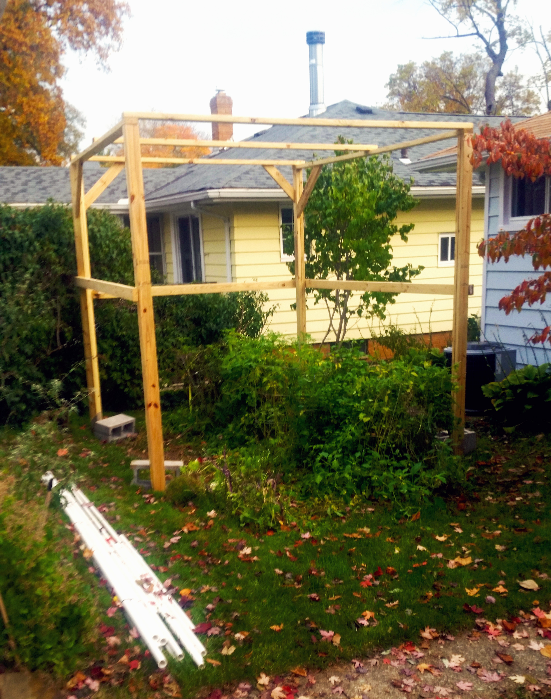
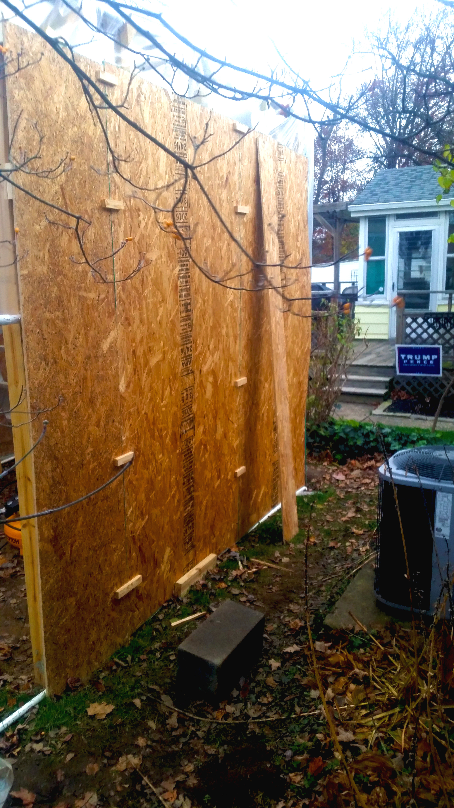

Mārtiņš Krēbs is an artist, activist, and a futurist.
Having experimented with guerilla gardening, and growing indoors without sunlight and soil, I am strive to fabricate an automated system that will produce food for a small to medium size family inside of a 100sqft area; Whether it be inside of a home, or as an external structure.
 

My focus is on hydroponic systems working in tandem to grow a variety of foods ranging from simple leafy greens, to tomatoes and peppers. One challenge I hope to tackle is grwing root/tuberous vegetables without soil or growing medium hydro/aeroponically.
Another problem I want to begin to tackle is designing "modular root system capture and control" pods. If control of root growth, and root containment of the entire root system of larger flora in a minimized amount of space, it become more likely and easier to grow and raise larger flora inside of artifiial agriculture systems.